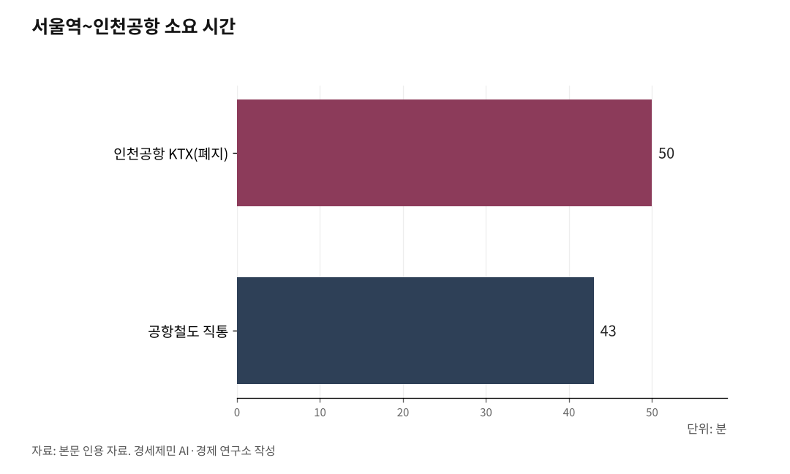

[127년 한국철도⑫] 세계 3위 인천공항, 제2공항철도로 부산·목포까지 KTX 직결하라
인천공항 철도는 서울행 한 가닥, 부산·목포 가려면 서울역서 갈아탄다
샤를드골은 14개 도시, 훙차오는 국내 곳곳 직결… 공항이 철도망의 결절이다
제2공항철도로 서울 너머 국내 전체와, 나아가 남북·대륙과 잇자
인하대 해양AI융합센터 김갑봉 연구교수(물류학)│인천공항은 세계 3위 관문이다. 그런데 그 관문을 잇는 철도는 서울행 한 가닥뿐이다. 파리와 프랑크푸르트 공항이 철도로 국내 전체와 대륙을 잇는 그물망을 갖춘 사이, 인천의 철길은 서울역까지만 닿는다. 국내 곳곳으로 가려면 거기서 갈아타야 한다. 서울에서 멈춘 이 철길을 국내 전체로 넓히는 것이 다음 과제다.

1. 서울에서 멈춘 철길
인천공항은 2024년 국제선 여객 7066만9246명을 처리했다. 개항 이래 가장 많고, 국제공항협의회(ACI) 집계로 국제선 여객 세계 3위다. 스카이트랙스 세계공항평가에서도 2024년 3위에 올랐다. 관문으로서 인천의 위상은 세계 정상급이다.
그런데 그 관문의 철길은 서울에서 멈춘다. 인천공항 고속철도(KTX)는 2014년 6월 열렸다가 4년 만인 2018년 폐지됐다. 고속열차가 공항철도 선로를 함께 써 시속 300km 열차가 170km로 기었고, 서울역에서 공항까지 50분이 걸려 공항철도 직통(43분)보다 느렸던 탓이다. 지금 공항과 서울을 잇는 것은 최고 시속 110km 공항철도 직통뿐이다. 국내 곳곳으로 뻗는 철길은 없다.
쏠림은 숫자로 드러난다. 지난해 철도를 탄 외국인은 606만명으로, 2023년 344만명에서 한 해 76% 늘었다. 2024년 10월에는 월 60만명을 처음 넘었다. 그런데 코레일 외국인 통계를 보면 이 외국인의 30.3%(2024년)가 서울~부산 한 축에 몰린다. 입국 관문이 인천 하나에 쏠린 데다, 그 인천조차 국내 곳곳으로 곧장 뻗는 철길이 없어서다.
내국인도 다르지 않다. 부산이나 목포에서 인천공항으로 가려면 KTX로 서울역까지 올라와 공항철도로 갈아타야 한다. 세계 3위 공항이 사실상 서울의 공항으로 좁혀져 있다.

2. 공항이 철도망의 결절이 된 곳들
앞선 공항들은 철길을 서울행 한 가닥이 아니라 국내 전체와 대륙으로 뻗는 그물망으로 깔았다.
파리 샤를드골은 터미널 안 떼제베(TGV) 역에서 프랑스 14개 도시로 직결된다. 릴 51분, 리옹 2시간2분, 마르세유 3시간55분에 닿는다. 프랑크푸르트는 공항 장거리역에서 인터시티익스프레스(ICE)로 쾰른·슈투트가르트와 베를린(3시간45분)까지 잇고, 루프트한자는 아예 기차를 항공 연결편으로 판다. 중국 상하이 훙차오는 2010년 세계에서 처음으로 공항과 고속철도를 한 건물에 묶었다. 그 역에서 베이징·시안·청두 등 국내 곳곳으로 고속철도가 갈라지고 하루 30만명이 오간다. 암스테르담 스키폴도 공항역에서 유로스타로 파리·브뤼셀까지 직결된다.
까닭은 분명하다. 첫째, 공항의 배후권이 국내 전체로 넓어진다. 철도가 공항에 닿으면 지방 사람이 국내선을 타거나 도로로 올라오지 않고 열차로 곧장 공항에서 국제선을 탄다. 공항이 한 도시의 공항이 아니라 나라 전체의 관문이 된다. 둘째, 단거리 국내선을 철도가 대신해 붐비는 활주로를 장거리 국제선에 돌린다. 셋째, 환승 없이 정시에, 적은 탄소로 나른다. 공항을 국내 철도망의 결절로 삼는 일은 항공 강국의 표준이 됐다.
3. 제2공항철도, 서울 너머 국내로
인천도 그 길로 넓힐 수 있다. 제2공항철도다. 수인분당선 인천역 인근에서 해저터널을 뚫어 인천공항 제1터미널까지 16.6km를 잇는 노선이다. 정거장 2개를 놓고, 사업비는 1조7000억원으로 잡힌다.
바탕은 이미 깔린다. 2026년 12월 개통하는 인천발 고속철도(송도역~어천역 3.19km)를 공항까지 끌어오는 구조다. 제2공항철도가 이어지면 인천공항에서 경부선으로 부산이, 호남선으로 목포가, 경강선으로 강릉이 서울역을 거치지 않고 직결된다. 서울행 한 가닥이 국내 곳곳으로 갈라지는 그물망이 되는 것이다. 외국인을 국내 곳곳으로 흩는 길과 내국인이 국내 곳곳에서 공항으로 곧장 닿는 길이 함께 열린다.
발목을 잡는 것은 경제성이다. 제2공항철도의 비용 대비 편익(B/C)은 0.76으로 기준치 1에 못 미쳐 제4차 국가철도망(2021~2030)에서 탈락했다. 인천시는 2024년 재기획 용역을 벌였으나 B/C를 1 이상으로 끌어올리지 못했고, 그럼에도 제5차 국가철도망(2026~2035)에 이 노선을 최우선 사업으로 건의했다. 세계 3위 관문을 국내 전체와 잇는 값어치를 좁은 편익비 하나로만 잴 일인지 되물어야 한다.
4. 국내 넘어 남북과 대륙으로
철길을 국내 전체로 넓히면 그다음이 보인다. 이 축은 훗날 북녘과 대륙으로 향하는 관문의 첫 단추다.
북한과 잇는 철도는 수도권을 관통하기 어렵다. 서울 도심 선로는 이미 포화라, 새 축은 영종도에서 강화도를 거쳐 북한 서해안 해주로 우회해야 한다. 인천공항이 놓인 영종도가 그 출발점이다.
밑그림은 이미 놓이고 있다. 2026년 7월 14일 영종도와 신도를 잇는 신도평화대교가 열렸다. 총연장 3.26km이고, 서해남북평화도로 첫 구간이다. 이 도로는 영종에서 신도·강화를 거쳐 개성·해주로 향한다. 그런데 개통한 다리는 왕복 2차로 도로일 뿐, 철도가 빠졌다. 영종~강화 구간에 철길을 함께 반영해야 한다는 목소리가 그래서 나온다.
철길이 국내를 지나 북으로 이어지면 인천공항은 세계와 국내를 잇는 관문을 넘어, 남북과 대륙을 잇는 관문이 된다. 훗날 북녘 지역 사람도 인천공항에서 세계로 나가고, 세계가 인천을 거쳐 대륙으로 든다.
세계 3위 관문과 세계 수준의 고속철도를 모두 가진 나라다. 둘을 잇기만 하면 된다. 서울에서 멈춘 철길을 국내 전체로, 나아가 한반도와 대륙으로 넓히는 것. 하늘길과 철길이 만나는 자리에서 다음 100년이 열린다.
※ 이 기사는 AI 프로그램 클로드를 활용해 작성했습니다.
참고문헌
· "인천국제공항, 지난해 국제선 여객 7067만명 기록…역대 최대 규모", 글로벌이코노믹, 2025.1.17., https://www.g-enews.com/article/Real-Estate/2025/01/202501171014091577a9fc143920_1
· "[기획] 인천공항 국제선 세계 3위 위상, 총여객 수는 13위", 인천투데이, https://www.incheontoday.com/news/articleView.html?idxno=313759
· "외국인 KTX 승객 '월 60만 시대' 역설…철도로 번진 '교통 병목'", 아주경제, 2026.6.15., https://www.ajunews.com/view/20260615150343787
· "TGV from CDG Airport: Routes, Station & Travel Info", easyCDG, https://easycdg.com/tgv-long-distance-train-cdg-airport-charlesdegaulle/
· "Frankfurt Airport long-distance station", Wikipedia, https://en.wikipedia.org/wiki/Frankfurt_Airport_long-distance_station
· "Hongqiao transportation hub", Wikipedia, https://en.wikipedia.org/wiki/Hongqiao_transportation_hub
· "[기획] 제2공항철도, 한국 관문 인천공항과 국내 곳곳을 KTX로", 인천투데이, 2024.10.26., https://www.incheontoday.com/news/articleView.html?idxno=255722
· "인천 영종도~신도 '신도평화대교' 개통…서해남북평화도로 시작", 뉴스핌, 2026.7.14., https://www.newspim.com/news/view/20260714001053
· "[사설] 영종~강화 남북평화도로 구간 남북철도 반영해야", 인천투데이, https://www.incheontoday.com/news/articleView.html?idxno=212047
#한국철도127년 #제2공항철도 #인천공항 #KTX직결 #고속철도 #인천공항KTX #국제선여객세계3위 #서울역병목 #공항철도복합 #외국인관광객 #서해남북평화도로 #남북철도 #대륙철도 #관문공항